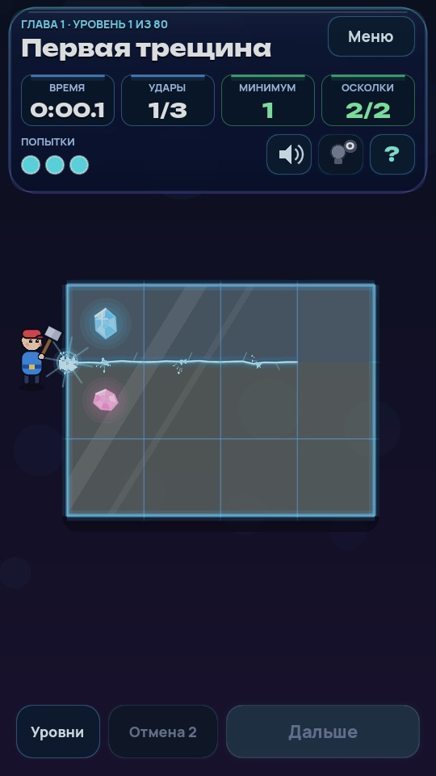

Puzzle game for iPhone
Shiverglass
One crystal per shard.
Pick where to strike, follow the cracks, and split the glass until every shard holds a single crystal.
How it plays
How it plays
Read the glass
Look at the board and choose a point where a crack can split the crystals apart.
Make each strike count
Each level gives you a limited number of strikes. Plan where the glass should break.
Explore eight chapters
Work through 80 puzzles as metal, portals and reinforced lines change where cracks can travel.